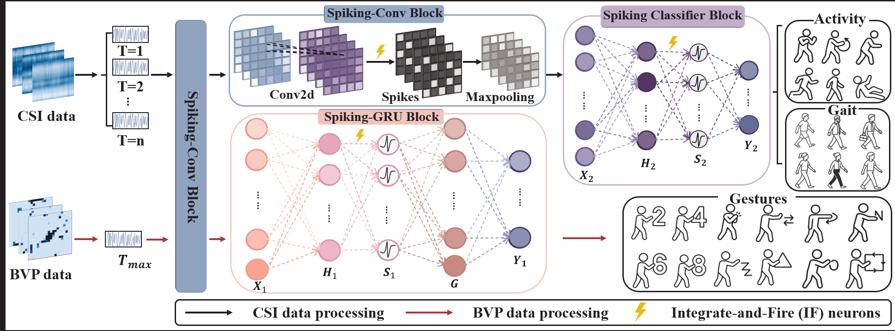
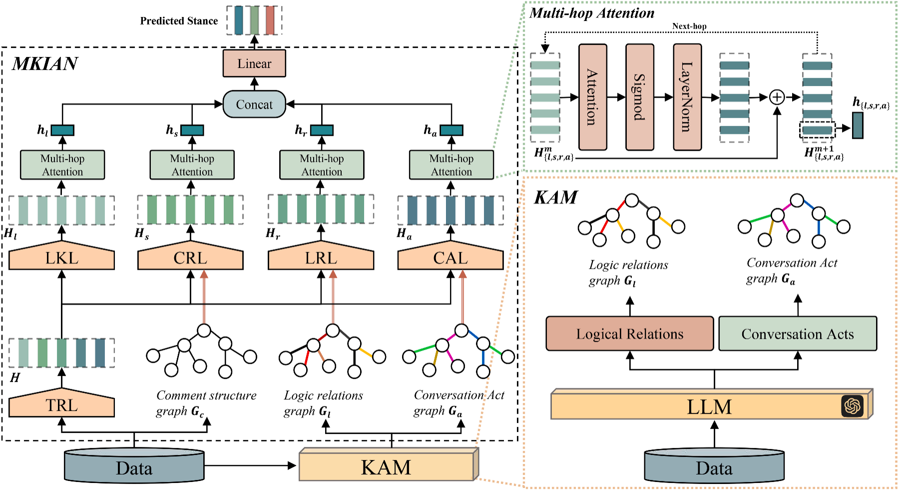

2026.09 — Now
M.S. Student in Computer Science and Technology
Southern University of Science and Technology (SUSTech) & Great Bay University (GBU), Shenzhen
Advised by Prof. Xiaodong Cun. Research focus: Video Generation.
卢怡沙
Exploring the future of Generative AI and Video Generation.
About Me
2026.09 — Now
Southern University of Science and Technology (SUSTech) & Great Bay University (GBU), Shenzhen
Advised by Prof. Xiaodong Cun. Research focus: Video Generation.
2025.03 — 2026.07
Shenzhen Technology University (SZTU), Shenzhen
Advised by Prof. Bowen Zhang and Prof. Liwen Jing. Explored: Wireless sensing, Foundation Models, and Spiking Neural Networks (SNNs).
2023.09 — 2025.03
Shenzhen Technology University (SZTU), Shenzhen
Advised by Prof. Bowen Zhang. Research focus: Natural Language Processing (NLP) and intelligent data analysis.
2021.09 — 2023.06
Shenzhen Technology University (SZTU), Shenzhen
Advised by Prof. Meng Li.
Publications


Neural Networks (Elsevier), 2026
We introduce MT2-CSD, a multi-target multi-turn conversational stance detection dataset, and propose LLM-CRAN for knowledge-enhanced conversational understanding.
† Equal contribution
Contact